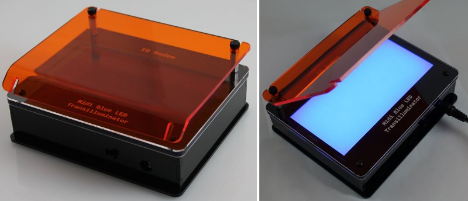

LED Transilluminator Build
Final assembled images
«
Assembly step 4
::
Contents
Final assembled images
¶
Mini Transilluminator
¶
Midi Transilluminator
¶

Large Transilluminator
¶
«
Assembly step 4
::
Contents